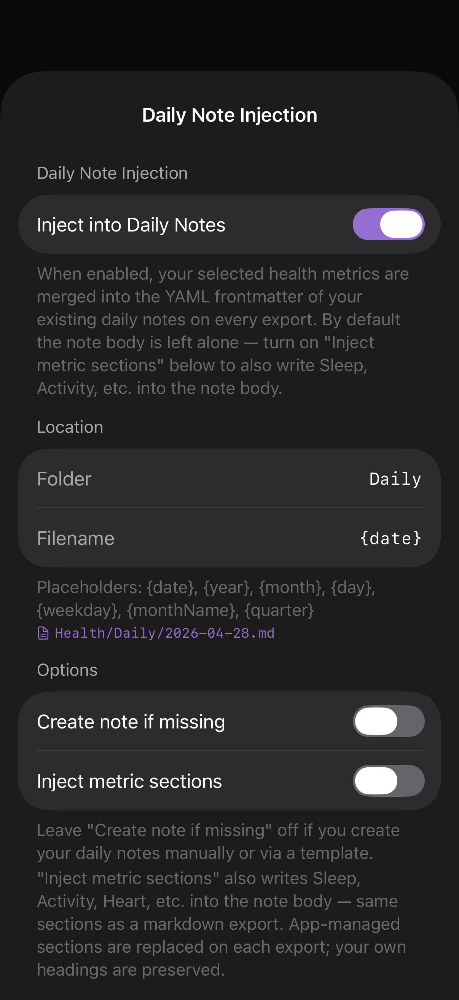

Daily Note Injection
Merge selected health metrics into the YAML frontmatter (and optionally the body) of your existing daily notes — the ones you write in Obsidian or any other Markdown app.

What it does
If you keep daily notes (e.g. Daily/2026-04-28.md), turn this on and the app will merge your selected metrics into the YAML frontmatter of those notes on every export — without touching the rest of your note content.
Optionally, the app can also inject Markdown sections (Sleep, Activity, Heart, etc.) into the note body. Those sections are app-managed: replaced cleanly on each export. Headings you write yourself stay untouched.
Location
Filename placeholders
Mix and match:
{date}— full ISO date (2026-04-28){year},{month},{day}{weekday}— short name (Tue){monthName}— long name (April){quarter}— Q1 / Q2 / Q3 / Q4
Example: {year}/{monthName}/{date}-{weekday} → 2026/April/2026-04-28-Tue.md. The preview line below the field shows the resolved path live.
Options
Which metrics get injected
Whatever you've selected in Health Metrics. There is no separate selector here. Change your metric selection there, and Daily Note Injection follows.
Frontmatter preview
The bottom of the Daily Note Injection screen has a live preview of the frontmatter that will be merged. This updates as you change metric selection or the format customization frontmatter fields.
If your existing daily note already has frontmatter, the app preserves your keys and adds/updates only the keys it owns. App-managed body sections are wrapped in HTML comments so re-runs are idempotent.